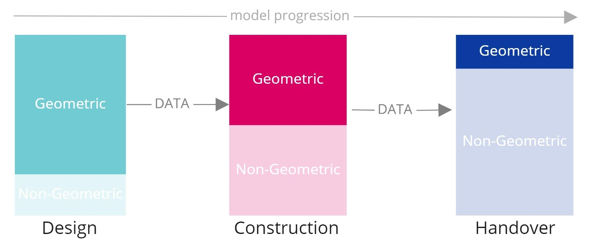

As COBie is editable in a simple XML/Spreadsheet format, it is within easy reach of all involved parties. It provides benefits for all stakeholders—Designers, Consultants, Facility Managers, Contractors, and Owners—acting as a standardized placeholder for data retrieval that can be mandated in contract documents like the BEP (BIM Execution Plan).
COBie acts as a data bridge between project phases. It adds no additional cost to Operations & Maintenance (O&M) because it can be extracted directly from a BIM Model and imported into Digital Asset Management solutions, avoiding the high costs associated with manual data re-entry and ensuring higher data quality.
Most of the information required for O&M is non-geometrical; the geometric component primarily exists to help the user locate assets. While not all data requires a 3D model, it can still be easily manipulated within BIM authoring platforms.
Well-planned COBie requirements save up to 6 weeks in a project!
Figure: Comparison of traditional data handover vs. structured COBie data exchange.